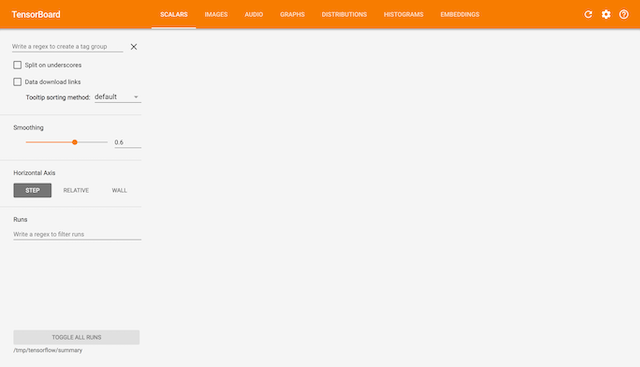

2.2 图与TensorBoard
学习目标
- 目标
- 说明图的基本使用
- 应用tf.Graph创建图、tf.get_default_graph获取默认图
- 知道开启TensorBoard过程
- 知道图当中op的名字以及命名空间
- 应用
- 无
- 内容预览
- 2.2.1 什么是图结构
- 2.2.2 图相关操作
- 1 默认图
- 2 创建图
- 2.2.3 TensorBoard:可视化学习
- 1 数据序列化-events文件
- 2 启动TensorBoard
- 2.2.4 OP
- 1 常见OP
- 2 指令名称
2.2.1 什么是图结构
图包含了一组tf.Operation代表的计算单元对象和tf.Tensor代表的计算单元之间流动的数据。
2.2.2 图相关操作
1 默认图
通常TensorFlow会默认帮我们创建一张图。
查看默认图的两种方法：
- 通过调用tf.get_default_graph()访问 ，要将操作添加到默认图形中，直接创建OP即可。
- op、sess都含有graph属性 ，默认都在一张图中
def graph_demo():
# 图的演示
a_t = tf.constant(10)
b_t = tf.constant(20)
# 不提倡直接运用这种符号运算符进行计算
# 更常用tensorflow提供的函数进行计算
# c_t = a_t + b_t
c_t = tf.add(a_t, b_t)
print("tensorflow实现加法运算：\n", c_t)
# 获取默认图
default_g = tf.get_default_graph()
print("获取默认图：\n", default_g)
# 数据的图属性
print("a_t的graph:\n", a_t.graph)
print("b_t的graph:\n", b_t.graph)
# 操作的图属性
print("c_t的graph:\n", c_t.graph)
# 开启会话
with tf.Session() as sess:
sum_t = sess.run(c_t)
print("在sess当中的sum_t:\n", sum_t)
# 会话的图属性
print("会话的图属性：\n", sess.graph)
return None
2 创建图
可以通过tf.Graph()自定义创建图
如果要在这张图中创建OP，典型用法是使用tf.Graph.as_default()上下文管理器
def graph_demo():
# 图的演示
a_t = tf.constant(10)
b_t = tf.constant(20)
# 不提倡直接运用这种符号运算符进行计算
# 更常用tensorflow提供的函数进行计算
# c_t = a_t + b_t
c_t = tf.add(a_t, b_t)
print("tensorflow实现加法运算：\n", c_t)
# 获取默认图
default_g = tf.get_default_graph()
print("获取默认图：\n", default_g)
# 数据的图属性
print("a_t的graph:\n", a_t.graph)
print("b_t的graph:\n", b_t.graph)
# 操作的图属性
print("c_t的graph:\n", c_t.graph)
# 自定义图
new_g = tf.Graph()
print("自定义图：\n", new_g)
# 在自定义图中去定义数据和操作
with new_g.as_default():
new_a = tf.constant(30)
new_b = tf.constant(40)
new_c = tf.add(new_a, new_b)
# 数据的图属性
print("new_a的graph:\n", new_a.graph)
print("new_b的graph:\n", new_b.graph)
# 操作的图属性
print("new_c的graph:\n", new_c.graph)
# 开启会话
with tf.Session() as sess:
sum_t = sess.run(c_t)
print("在sess当中的sum_t:\n", sum_t)
# 会话的图属性
print("会话的图属性：\n", sess.graph)
# 不同的图之间不能互相访问
# sum_new = sess.run(new_c)
# print("在sess当中的sum_new:\n", sum_new)
with tf.Session(graph=new_g) as sess2:
sum_new = sess2.run(new_c)
print("在sess2当中的sum_new:\n", sum_new)
print("会话的图属性：\n", sess2.graph)
# 很少会同时开启不同的图，一般用默认的图就够了
return None
TensorFlow有一个亮点就是，我们能看到自己写的程序的可视化效果，这个功能就是Tensorboard。在这里我们先简单介绍一下其基本功能。
2.2.3 TensorBoard:可视化学习
TensorFlow 可用于训练大规模深度神经网络所需的计算，使用该工具涉及的计算往往复杂而深奥。为了更方便 TensorFlow 程序的理解、调试与优化，TensorFlow提供了TensorBoard 可视化工具。

实现程序可视化过程：
1 数据序列化-events文件
TensorBoard 通过读取 TensorFlow 的事件文件来运行，需要将数据生成一个序列化的 Summary protobuf 对象。
# 返回filewriter,写入事件文件到指定目录(最好用绝对路径)，以提供给tensorboard使用
tf.summary.FileWriter('./tmp/summary/test/', graph=sess.graph)
这将在指定目录中生成一个 event 文件，其名称格式如下：
events.out.tfevents.{timestamp}.{hostname}
2 启动TensorBoard
tensorboard --logdir="./tmp/tensorflow/summary/test/"
在浏览器中打开 TensorBoard 的图页面 127.0.0.1:6006 ，会看到与以下图形类似的图,在GRAPHS模块我们可以看到以下图结构

2.2.4 OP
2.2.4.1 常见OP
哪些是OP？
| 类型 | 实例 |
|---|---|
| 标量运算 | add, sub, mul, div, exp, log, greater, less, equal |
| 向量运算 | concat, slice, splot, constant, rank, shape, shuffle |
| 矩阵运算 | matmul, matrixinverse, matrixdateminant |
| 带状态的运算 | Variable, assgin, assginadd |
| 神经网络组件 | softmax, sigmoid, relu,convolution,max_pool |
| 存储, 恢复 | Save, Restroe |
| 队列及同步运算 | Enqueue, Dequeue, MutexAcquire, MutexRelease |
| 控制流 | Merge, Switch, Enter, Leave, NextIteration |
一个操作对象（Operation）是TensorFlow图中的一个节点, 可以接收0个或者多个输入Tensor, 并且可以输出0个或者多个Tensor，Operation对象是通过op构造函数（如tf.matmul()）创建的。
例如: c = tf.matmul(a, b) 创建了一个Operation对象，类型为 MatMul类型, 它将张量a, b作为输入，c作为输出,，并且输出数据，打印的时候也是打印的数据。其中tf.matmul()是函数，在执行matmul函数的过程中会通过MatMul类创建一个与之对应的对象
# 实现一个加法运算
con_a = tf.constant(3.0)
con_b = tf.constant(4.0)
sum_c = tf.add(con_a, con_b)
print("打印con_a：\n", con_a)
print("打印con_b：\n", con_b)
print("打印sum_c：\n", sum_c)
打印语句会生成：
打印con_a：
Tensor("Const:0", shape=(), dtype=float32)
打印con_b：
Tensor("Const_1:0", shape=(), dtype=float32)
打印sum_c：
Tensor("Add:0", shape=(), dtype=float32)
注意，打印出来的是张量值，可以理解成OP当中包含了这个值。并且每一个OP指令都对应一个唯一的名称，如上面的Const:0，这个在TensorBoard上面也可以显示
请注意，tf.Tensor 对象以输出该张量的 tf.Operation 明确命名。张量名称的形式为 "<OP_NAME>:<i>"，其中：
- "<OP_NAME>" 是生成该张量的指令的名称
- "<i>" 是一个整数，它表示该张量在指令的输出中的索引
2.2.4.2 指令名称
tf.Graph对象为其包含的 tf.Operation对象定义的一个命名空间。TensorFlow 会自动为图中的每个指令选择一个唯一名称，用户也可以指定描述性名称，使程序阅读起来更轻松。我们可以以以下方式改写指令名称
- 每个创建新的 tf.Operation 或返回新的 tf.Tensor 的 API 函数可以接受可选的 name 参数。
例如，tf.constant(42.0, name="answer") 创建了一个名为 "answer" 的新 tf.Operation 并返回一个名为 "answer:0" 的 tf.Tensor。如果默认图已包含名为 "answer" 的指令，则 TensorFlow 会在名称上附加 "1"、"2" 等字符，以便让名称具有唯一性。
- 当修改好之后，我们在Tensorboard显示的名字也会被修改
a = tf.constant(3.0, name="a")
b = tf.constant(4.0, name="b" )